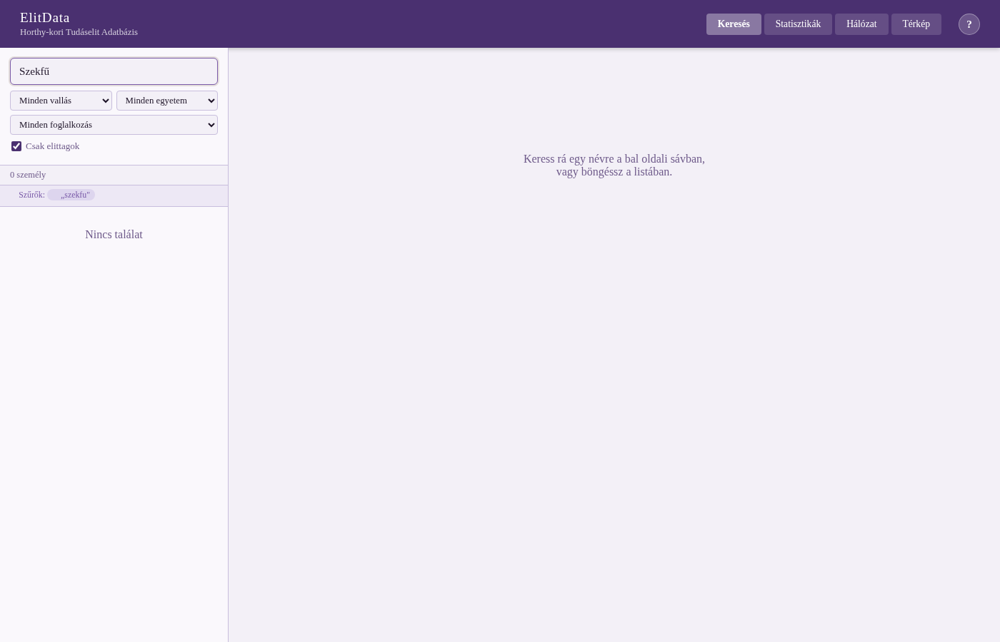
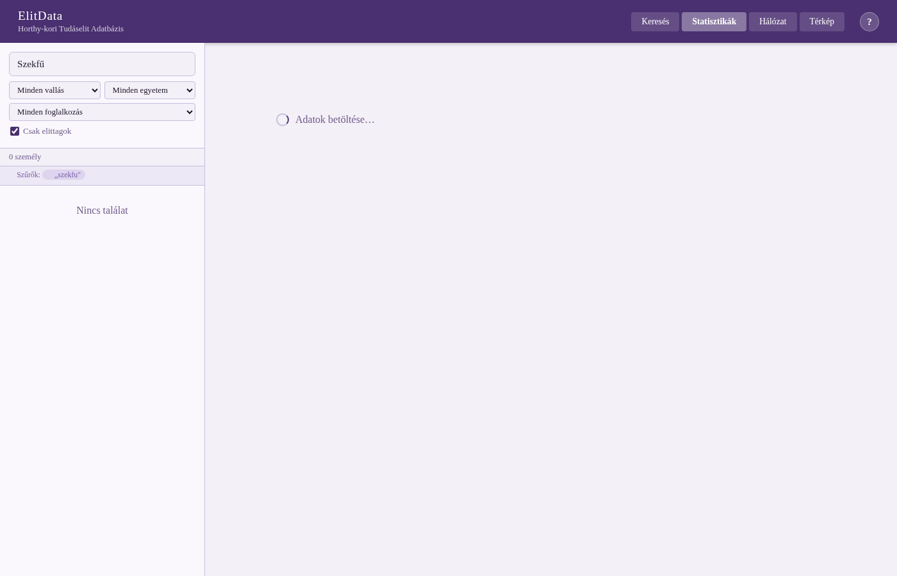
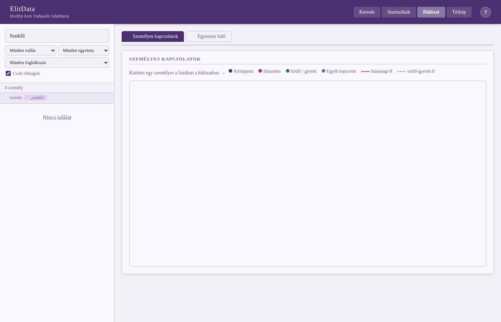
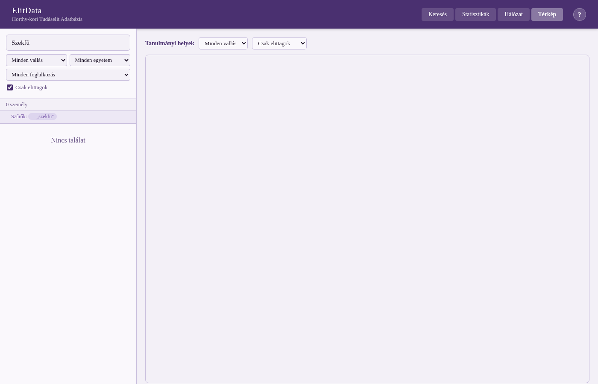

9 Prozopográfiai adatbázis építése — lépésről lépésre
Ez a fejezet az ElitData kutatócsoport („Tudáselit és politika a Horthy-korban”) munkáján keresztül mutatja be a prozopográfiai adatbázis-építés teljes folyamatát. Az esettanulmány a Nemzeti Kutatási, Kiválósági Program (NKKP) keretében készült.
9.1 Mikor érdemes adatbázist építeni?
A prozopográfia személyek egy meghatározott csoportjának kollektív biográfiai vizsgálata: nem az egyén életútja, hanem a csoport közös jellemzői, belső struktúrái és kapcsolatrendszere áll a középpontban. Az előző fejezetben az egyházmegyei ösztöndíjasok esettanulmányán láttuk a módszer alkalmazását — most a technikai megvalósítást vesszük részletesebben szemügyre.
Adatbázis-megközelítés akkor indokolt, ha:
- a vizsgált személyek száma meghaladja a néhány tucatot,
- több, egymáshoz kapcsolódó változóval dolgozunk (foglalkozás, vallás, iskolázottság, kapcsolatok, időpontok),
- ismétlődő lekérdezésekre, szűrésekre és vizualizációra van szükség,
- a kutatócsoport több tagja párhuzamosan dolgozik az adatokon.
9.2 A kutatási keret meghatározása
Mielőtt bármilyen adatot gyűjtenénk, három kérdést kell pontosan megválaszolni:
Kit veszünk fel az adatbázisba? Az ElitData esetében a Horthy-kori tudáselit: tudósok, írók, tanárok, közszereplők — meghatározott pozíciók, intézményi tagságok vagy publikációs teljesítmény alapján. A határok meghúzása egyszerre módszertani és historiográfiai döntés; dokumentálni kell az elveket.
Milyen időszakot fedünk le? Az adatbázis akkor koherens, ha az időhatárok kutatási szempontból indokoltak és következetesen alkalmazottak (pl. születési év, az aktív pályaszakasz, egy konkrét korszak).
Mik a fő kutatási kérdések? Ezek határozzák meg, hogy egyáltalán milyen adatokat érdemes összegyűjteni — fölösleges olyan változókat rögzíteni, amelyeket soha nem fogunk elemezni.
9.3 Adatmodell tervezése
A relációs adatmodell az alapja szinte minden prozopográfiai adatbázisnak. Az ElitData sémájának fő táblái:
| Tábla | Tartalom |
|---|---|
tbl_Szemelyek |
Alapadatok: neve, születési/halálozási év, nem, vallás, elitcsoport-kód |
tbl_Foglalkozasok |
Személyenkénti foglalkozások időponttal (egy személynek több sora lehet) |
tbl_Egyetemek |
Felsőoktatási intézmények látogatása |
tbl_Kapcsolatok |
Személyek közötti relációk típussal (házasság, szülő–gyerek, kolléga) |
tbl_Vallasok |
Feloldó kódtábla (rövid kód → teljes megnevezés) |
Kulcstervezési döntések:
- Minden személynek egyedi
SzemelyIDazonosítója van — ez az összes többi tábla idegen kulcsa. - Az időpontokat érdemes egységesen kódolni (pl. évtized vagy konkrét év), mert a vegyes formátumú dátumok utólag nehezen kezelhetők.
- A kapcsolattípusokat kódtáblában tároljuk, nem szabad szövegként: a „házasság” és a „házastárs” kétféle írásmódja nem ugyanaz a gép szemével.
9.4 Adatgyűjtés és forráskezelés
A prozopográfiai adatgyűjtés forrásigényes munka. Tipikus forrástípusok:
- Lexikonok, almanachok (pl. Magyar Életrajzi Lexikon, Gulyás Pál Lexikon): jó kiindulópont, de rendszerint hiányos és nem egységes
- Intézményi névsorok (akadémiai taglisták, iskolai értesítők, kamarai nyilvántartások)
- Anyakönyvek, levéltári iratok: pontos adatok, de nagy munkaráfordítás
- Önéletrajzok, nekrológok: narratív forrás, amelyből strukturált adatot kell kinyerni
Amit érdemes előre eldönteni:
- Hogyan jelöljük, ha egy adat bizonytalan vagy hiányzik? (pl.
NULLvs. „ismeretlen” szöveg) - Ha egy személynek több neve van (leánykori, felvett, magyarosított), melyik az „alap”?
- Hogyan kezeljük az egymásnak ellentmondó forrásokat?
9.5 Adatbevitel és kódolás
Az adatbevitel folyamatában rengeteg apró döntés halmozódik fel, amelyek utólag nagyon nehezen korrigálhatók.
Kódolási útmutató készítése minden változóhoz, amelyet a kutatócsoport minden tagja ismer és követ. Például a valláskódok (rk, ref, ev, zsidó) listája legyen rögzített és zárt.
Rövidítések és változatok már bevitelkor egységesítendők — vagy utólag harmonizálandók. Az ElitData-ban a foglalkozások pl. HTB, HÁZTARTÁSBELI, Háztartásbeli alakban is előfordultak; ezeket egy harmonizált oszlopban egységesítették.
Eredeti adat megőrzése. Soha ne írjuk felül az eredeti, forrásból átvett adatot. Mindig új oszlopba kerüljön a tisztított/harmonizált változat — visszakövethetőség és ellenőrizhetőség céljából.
9.6 Adattisztítás és harmonizálás
Ez a legtöbb időt felemésztő munkafázis. Az ElitData foglalkozásoszlopán elvégzett tisztítás illusztrálja a tipikus problémákat:
Kódolási hibák (karakterkészlet-problémák): ô → ő, û → ű. Ezek rendszerint régi adatbázis-exportokból vagy különböző operációs rendszerek közötti átvitelből adódnak.
Rövidítések feloldása egy explicit szótár alapján:
| Rövidítés | Feloldás |
|---|---|
HTB |
Háztartásbeli |
REF LELK |
Református lelkész |
ÁG EV LELK |
Ágostai evangélikus lelkész |
VM IKTATÓ |
Vármegyei iktató |
FŐGIMN TANÁR |
Főgimnáziumi tanár |
Ahol nem egyértelmű, nem érdemes automatikusan feloldani — inkább maradjon az eredeti rövidítés.
Kategorikus összevonás: a FÖLDMÜVES, FÖLDMÍVES és FÖLDMŰVELŐ mind azonos foglalkozást takarnak → egységesítés Földműves-re.
Technikai eszközök: Python (openpyxl, pandas), reguláris kifejezések, illetve manuális felülvizsgálat. A szkriptek verziókezelőben (pl. Git) tárolhatók — így reprodukálható és dokumentált a teljes tisztítási folyamat.
Eredmény az ElitData-ban: 3 956 foglalkozásbejegyzésből az eredeti ~3 400 különböző ALL CAPS forma 2 390 egyedire csökkent, és az összes bejegyzés olvasható, egységes formátumot kapott.
9.7 Technikai megvalósítás
9.7.1 Backend — adatbázis-kezelő rendszer
Az ElitData Supabase-t (hosztolt PostgreSQL) használ. Alternatívák:
| Megoldás | Mikor érdemes? |
|---|---|
| SQLite | Egyszemélyes projekt, egyszerű struktúra |
| PostgreSQL / Supabase | Többfelhasználós, webes hozzáférés |
| MySQL | Széles körben támogatott, közepes projektek |
| Microsoft Access | Nem ajánlott nagyobb projektekhez |
A lényeg: relációs adatbázis, SQL-lekérdezhetőség.
9.7.2 Frontend — vizualizáció és lekérdező felület
Az ElitData egyetlen HTML-fájlban valósítja meg a teljes vizualizációs felületet, Vanilla JS-sel, D3.js-sel és Leaflet.js-sel. Minden vizualizáció az adatbázisból élő lekérdezéssel töltődik. A főbb nézetek:
- Keresés/profil: egy személy összes adata egy helyen, navigálható kapcsolatokkal
- Statisztikák: foglalkozás- és vallásmegoszlás, felekezetek közötti házasságok hőtérképe
- Hálózat: személyek közötti kapcsolatok erő-irányított gráfként (D3 force simulation), vallás szerinti klaszterezési lehetőséggel
- Térkép: egyetemek földrajzi eloszlása Leaflet.js-sel, szűrhető elit-csoport és vallás szerint
Miért érdemes mindezt egyetlen fájlban tartani kisebb projekteknél? Könnyen megosztható, nem igényel szervert a megjelenítéshez, reprodukálható. Ugyanez az elv érvényesül a kurzus annotáló eszközénél is (ld. 5 fejezet).
9.8 Az ElitData böngésző felülete
Az ElitData kb. 1 500 elittag és mintegy 9 000 személy életrajzi, karrier- és kapcsolati adatait tartalmazza a Horthy-korszakból (1920–1944). Az adatbázis böngészője egyetlen weboldalként működik — nincs szükség telepítésre, az összes funkció a böngészőből elérhető. A felület tetején négy fő nézet közül lehet választani: Keresés · Statisztikák · Hálózat · Térkép.
9.8.1 Keresés és személyprofil
A bal oldali sávban névre lehet keresni (legalább 2 karakter). A keresés tovább szűkíthető négy legördülő menüvel, amelyek egymással kombinálhatók:
| Szűrő | Mit tesz |
|---|---|
| Vallás | Csak az adott felekezethez tartozó személyek jelennek meg |
| Egyetem | Csak azok, akik az adott intézménybe jártak |
| Foglalkozás | Csak azok, akiknél ez a foglalkozás szerepel a karrierbejegyzések között |
| Csak elittagok | Bejelölve az ~1 500 elittag látszik; levéve az összes ~9 000 személy böngészhető |
Bármelyik névre kattintva megnyílik a személy teljes adatlapja: alapadatok, pályafutás, tanulmányok, kitüntetések, közéleti szerepek, külföldi tartózkodások és a személyes kapcsolati háló.

Figure 9.1: Az ElitData keresés és személyprofil nézete — szűrhető keresés és részletes adatlap
9.8.2 Statisztikák
A Statisztikák nézet az elittagokra vonatkozó összesítéseket mutat: az adatbázis mérete és megoszlása, vallási megoszlás, születési évtizedek, leggyakoribb párttagságok és foglalkozások. Különösen értékes a vallásközi házasságok mátrixa: egy táblázat, amelynek sorai és oszlopai a felekezeteket jelölik, a cellákban az adott kombinációjú házasságok száma áll — vizuálisan is megjelenik az endogámia és a felekezeti keveredés mintázata.

Figure 9.2: Az ElitData statisztikai nézete — vallási megoszlás és házassági mátrix
9.8.3 Hálózat
A hálózati nézet két módot kínál. A személyes kapcsolati háló egy kiválasztott személy közvetlen kapcsolatait jeleníti meg: a teli körök elittagokat, a szaggatott szélűek nem elittagokat jelölnek; a szín a kapcsolat típusát kódolja (piros = házastárs, zöld = szülő/gyerek, kék = egyéb). Az egyetemi háló egy intézményt kiválasztva mutatja az ott tanult személyek egyidejűségi hálózatát — a vallási klaszterek bekapcsolásával vizuálisan is megjelenik, hogy az intézményen belül volt-e felekezeti elkülönülés.

Figure 9.3: Az ElitData hálózati nézete — személyes kapcsolatok és egyetemi egyidejűség
9.8.4 Térkép
A térképes nézet az elittagok felsőoktatási tanulmányainak helyszíneit mutatja interaktív térképen. Minden körjelölő egy várost/intézményt jelöl; a kör mérete arányos az onnan érkező hallgatók számával, a színe a domináns felekezetet jelzi. A nézet szűrhető vallás és elittag/mindenki szerint.

Figure 9.4: Az ElitData térképes nézete — felsőoktatási helyszínek és felekezeti megoszlás
9.8.5 A nézetek kutatási alkalmazása
| Nézet | Leginkább alkalmas arra, hogy… |
|---|---|
| Keresés | egyéneket azonosítsunk és életrajzi adataikat összevessük |
| Statisztikák | a csoport egészére vonatkozó arányokat és tendenciákat lássuk |
| Személyes hálózat | egy adott személy kapcsolatrendszerét feltérképezzük |
| Egyetemi háló | intézményi összetartozást és egyidejűséget vizsgáljunk |
| Térkép | a tanulmányi útvonalak földrajzi mintázatait feltárjuk |
9.9 Elemzési lehetőségek
Az adatbázis felépítése után az alábbi típusú elemzések válnak lehetségessé:
Leíró statisztika: ki volt ez a csoport? Vallási, foglalkozási, regionális összetétel.
Hálózatelemzés: ki ismert kit? Milyen közösségek rajzolódnak ki a kapcsolatrendszerben? A házassági hálózat a vallási endogámiát mutatja; az egyetemi hálózat az intézményi összetartozást.
Időbeli változás: hogyan alakult a csoport összetétele évtizedenként? Milyen pályatípusok jellemzők?
Térbeli elemzés: honnan jöttek, hol tanultak, hol dolgoztak?
Komparatív elemzés: összehasonlítás más korszakok vagy országok elitadatbázisaival (pl. PROSOP European database of medieval scholars, Oxford DNB).
9.10 Kihívások és tanulságok
| Kihívás | Tanulság |
|---|---|
| Az adatgyűjtés mindig tovább tart a vártnál | Minimális adatmodellel kezdjünk; bővíteni mindig lehet |
| Az adatminőség egyenetlen a különböző forrásokban | Mindig jegyezzük fel a forrást és a bizonytalanságot |
| A tisztítás sosem ér véget teljesen | 80%-os tisztaság mellett is lehet értelmes elemzést végezni |
| A vizualizáció elvárásait nem könnyű kielégíteni | A technikai és a szakmai kompetencia ritkán van egy személyben |
| Az adatbázis „soha nem kész” | Verziókezelés, dokumentáció és archiválás nélkül elvész a munka |
9.11 Etikai és jogi szempontok
- Élő személyek esetén adatvédelmi kérdések merülnek fel (GDPR): a Horthy-kori adatbázisnál ez kevésbé kritikus, de kortárs prozopográfiáknál komoly korlát.
- Forrásjog: digitalizált levéltári anyag felhasználása esetén az intézmény engedélye szükséges lehet.
- Nyilvánosság vs. zárt kutatói hozzáférés: kinek, milyen formában és milyen feltételekkel legyen elérhető az adatbázis?
- Citálhatóság: az adatbázisnak legyen DOI-ja és ajánlott hivatkozási formátuma, hogy mások is felhasználhassák.
9.12 A folyamat összefoglalása
A prozopográfiai adatbázis-építés lépései — az ElitData példáján:
- Kutatási kérdések megfogalmazása
- Csoport definíciója + időhatárok meghatározása
- Adatmodell tervezése (táblák, változók, kódtáblák)
- Forrásválasztás + kódolási útmutató készítése
- Adatbevitel (az eredeti formában)
- Adattisztítás + harmonizálás (új oszlopokban, az eredeti megőrzésével)
- Backend: relációs adatbázis felépítése
- Frontend: keresés, statisztika, hálózat, térkép
- Elemzés + publikálás + archiválás
Ez a sorrend nem szigorúan lineáris: a legtöbb projekt iteratív, azaz a tisztítás közben derülnek ki az adatmodell hiányosságai, és az elemzés közben merülnek fel újabb adatgyűjtési igények.